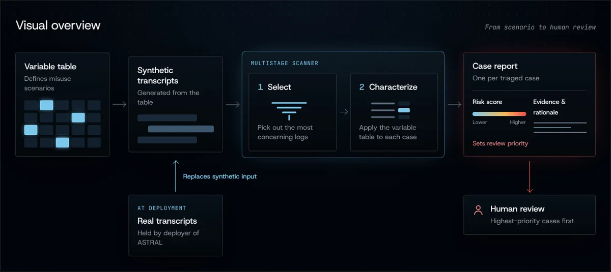

Cambridge Boston Alignment Initiative (CBAI) AI×Biosecurity Fellowship
Biological misuse detection for AI chat logs
ASTRAL scans an organization’s own AI transcripts for biological misuse, returning a risk score and threat characterization that helps any team, experts and nonexperts alike, cut through log volume and check what may be a real threat.
Scroll to see how it works
02 / 05
AI bio-capabilities are advancing
AI already outperforms expert virologists on wet-lab troubleshooting in test settings [5], and leading open-weight models trail closed frontier models by about eight months in biological capabilities [6]. If this trend continues, today’s frontier biological capabilities could reach unmonitored platforms in less than a year.
03 / 05
ASTRAL reads whole conversations
Intent accumulates across turns (persistence past refusals, session-hopping, incremental progress) and rarely sits in one flaggable message. ASTRAL runs always-on against incoming logs or retrospectively over historical ones.
04 / 05
Most logs are discarded cheaply
A keyword filter and an embedding filter discard the majority of logs. Only the small remainder reaches the LLM scanner, which classifies each transcript against the variable table and writes the risk report.
05 / 05
Each flagged case gets a review priority
ASTRAL distills each flagged conversation into a structured risk report for a human reviewer: apparent actor and goal, the threat pathway implicated, and a review priority.
Next
See it in action
Try ASTRAL in the demo.
Seeking a real-world validation partner
We’re seeking a log-holding collaborator to validate ASTRAL in a real deployment. We’ll adapt ASTRAL to your platform and work with your team to strengthen bio-misuse detection.
ASTRAL@detection.bioInterested in collaborating, or want to learn more? Get in touch.
Read more

ASTRAL project summary The gap ASTRAL addresses, how it works, who runs it, and sources, with a visual overview. The one-page PDF can be downloaded there. Read the summary →